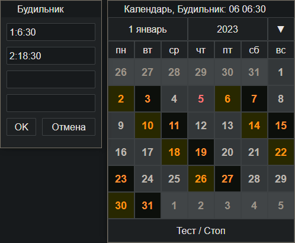
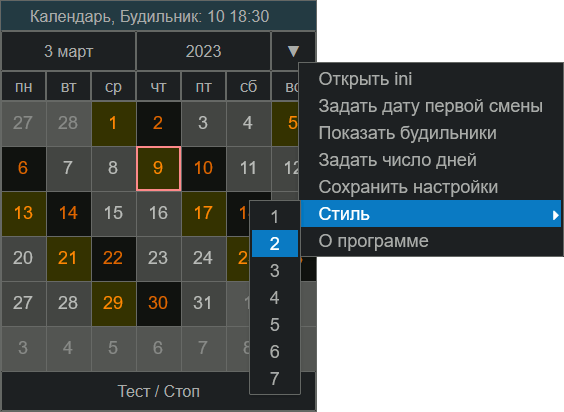

CalendarAlarm
Назначение
Календарь смен с будильником.


Взаимосвязанные
CalendarAlarm
Работа с программой
Кратко: сформировать ini-файл и открыть его в программе.
Установка
Запустить APK файл. Если выдаёт сообщение что файл неизвестный, то в настройках разрешить устанавливать сторонние приложения из неизвестных источников (известный это Google Play). Если "Google Play" блокирует программу, то в окне блокировки нажать "Сведения", прокрутить вниз, появится кнопка "Всё равно установить".
Параметры ini-файла
FirstDay=2023.10.3 - Дата первой смены
Cycle=4 - Число дней в цикле (4 или 7 или другое)
Alarm1=1:6:30 - Будильник 1-й день цикла, время 6:30
Alarm2=2:18:30 - Будильник 2-й день цикла, время 18:30 (в ночь)
Color=4,b,330,F80,1,D60,5,8,F88,69 - Цвет дней, 10 шт через запятую
Snooze=10,20,30,60 - Варианты отложить будильник, в минутах
Play=10 - Длительность воспроизведения будильника в минутах (1-60)
Здесь FirstDay задаёт дату первой смены, чтобы подкрасить дни и определить начало отсчета дней для будильника.
Alarm1 задаёт будильник, где 1:6:30 это номер дня смены 1, и время будильника 6 часов, 30 минут. Первый день смены это тот который указан в FirstDay, другие дни относительно первого дня, то есть 2-й, 3-й и 4-й. Всего 4 дня и можно задать 4 будильника. После срабатывания будильника активизируется следующий будильник. Если в цикле 4 смены, то нельзя назначить будильник на 5-ый день.
Color - Цвет указывается 6-значным шестнадцатеричным числом, при этом сокращённые варианты расшифровываются следующим образом:
"a"="aaaaaa"
"3f"="3f3f3f"
"f00"="ff0000"
Цвет задаётся парами, в каждой паре цвет фона и цвет текста (числа).
пара 1 цвет выходных дней
пара 2 цвет дневной смены (первый в цикле)
пара 3 цвет ночной смены (второй в цикле), можно задать его цветом как первый день, то есть 2+2 или как выходной день, получим 1+3.
пара 4 блеклый цвет в начале и в конце дней предыдущего и следующего месяца
пара 5 цвет текущего дня и цвет сетки. Использовать 0, чтобы текущий день или сетка не отображались, будет стиль плиткой, похожий на метро. Эти последние 2 цвета можно не указывать, они будут считаться как 0 и игнорироваться.
Лучший способ подобрать собственные цвета - сделать скриншот программы, открыть в продвинутом графическом редакторе и поиграть с настройками тон-насыщенность и далее скопировать цвета с помощью пипетки. Можно выделить отдельные элементы окна, скрыть границы выделения или скопировать в новый слой, чтобы регулировать избирательно.
Кнопки
На данный момент 4 кнопки, выбор месяца, года, остановки проигрывания и меню с пунктами установки первой даты, открытие конфигурационного файла, просмотр и изменение будильников.
Подсветка дат в календаре
При выборе смены подсвечиваются 2 рабочие смены. Можно задать настройки цвета через ini-файл, чтобы сделать ночную смену как выходной, чтобы график выглядел как сутки-через-трое.
Будильник
Важно, чтобы будильник сработал, нужно оставить окно программы открытым. Это предотвращает выгрузку программы из памяти.
При проигрывании будильника нажать кнопку "Стоп" или "Отложить", перед этом указав время в нижнем ряду кнопок на сколько минут необходимо отложить будильник для повторного срабатывания.
Также в главном окне можно нажать кнопку "Тест / Стоп", чтобы остановить проигрывание, а также для теста будильника (стабильная работа модуля, громкость).
Немного о работе таймера:
Так как таймер имеет низкий приоритет событий заданного интервал времени до будильника, то приоритетные события приостанавливающие работу таймера откладывали его проверки, что приводило к сдвигу срабатывания будильника до +20% от заданного интервала. Чтобы это исключить используется промежуточный таймер, смысл которого срабатывать в половине времени до будильника, то есть если до будильника осталось 16 часов, то таймер будет установлен на срабатывание через 8 часов с проверкой сколько осталось времени до будильника, потом через 4 часа, потом через 2 часа, потом через 1 час, потом через 30 минут, далее 15, далее 7, далее 3, далее 90 сек, когда до будильника останется времени менее 1 минуты, то включится окончательный таймер, у которого уже будет минимальная погрешность 10 секунд.
Задать число повторяющихся дней
Этот пункт меню задаёт 4-х дневную смену или 2-х дневную или 7-дневную или 30-ти дневную (вахтовую).
Сохранить настройки
Этот пункт меню позволяет сохранять данные в кеше (данные подхватываются при открытии программы), а при согласии экспортировать файл создаёт внешний файл в папке Download (Закачки), который можно в дальнейшем открыть через пункт меню "Открыть ini".
Если есть желание, чтобы после установки сразу открывались необходимые настройки, то нужно перепаковать APK файл с помощью "APK.Tool.GUI.v3.0.2.0", заменив содержимое файла "\assets\www\data\set0.ini" своими данными.
Стиль
Позволяет быстро переключить стиль на один из 7 вариантов. Если нужно оставить выбранный стиль, то обязательно выбрать пункт меню "Сохранить настройки". Эта встроенная возможность позволяет иметь 7 конфигурационных файлов внутри программы. Соответственно, если перепаковать программу, то можно в каждый из 7 файлов вставить собственные настройки. На данный момент в них только настройки цвета и это никак не влияет на что-либо другое.